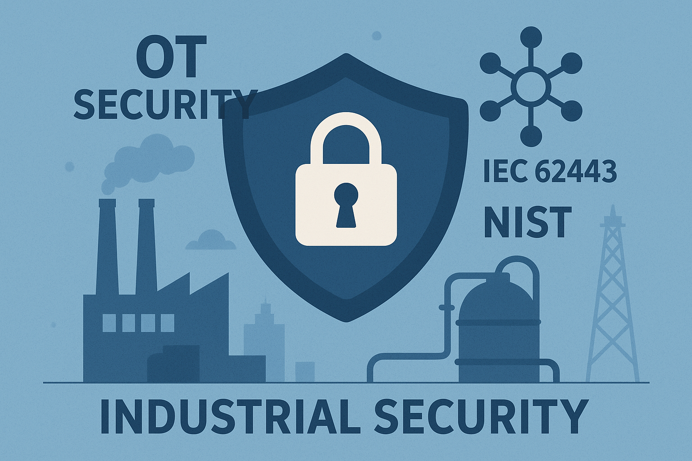

Total Wisdom delivers cybersecurity, enterprise IT infrastructure, business continuity, secure data transfer, and industrial security solutions across the UAE and GCC. Our services are supported by specialized CYRUS security platforms designed for enterprise, government, and critical infrastructure environments.
From enterprise cybersecurity and IT infrastructure to virtualization, cloud, business continuity, secure data transfer, and industrial protection, Total Wisdom helps organizations design, deploy, secure, and operate the systems their business depends on.
Our services combine proven engineering practices, recognized security standards, and proprietary CYRUS security platforms to reduce risk, strengthen resilience, and keep critical operations running.

Six comprehensive service domains spanning cybersecurity, enterprise IT, cloud, resilience, secure data transfer, and industrial protection.
Identify, prioritize, and reduce cyber risks across enterprise environments using security assessments, exposure management, and continuous visibility capabilities.
Design, deploy, and maintain secure and scalable IT infrastructures that support business growth and operational efficiency.
Build resilient virtualized and cloud-enabled infrastructures with performance, availability, and security in mind.
Protect critical business operations through robust backup, disaster recovery, and continuity frameworks.
Powered by CYRUS Unidirectional Gateway / Data Diode
Enable secure one-way communication between trusted and untrusted networks using hardware-enforced network isolation technology. The platform supports dedicated agents for database replication, file transfer, and syslog forwarding while maintaining complete network separation.
Powered by CYRUS Industrial Firewall
Protect industrial control systems, critical infrastructure, and operational technology networks through specialized cybersecurity architectures and industrial-grade security controls.
Measurable outcomes that directly impact your security posture and business continuity.
Measurably reduced cyber risk exposure to critical infrastructures and industrial operations.
Enhanced business continuity and operational resilience for industrial environments.
Full compliance with international standards: IEC 62443, NIST, NERC-CIP, and NIS2.
Reduced downtime and financial losses from cyber incidents through proactive defense.
Improved trust, reliability, and safety across all industrial operations and processes.
Management dashboards with KPI/KRI metrics providing real-time visibility into your security posture.
Specialized security technologies including CYRUS Exposure Intelligence, CYRUS Unidirectional Gateway / Data Diode, and CYRUS Industrial Firewall support advanced cybersecurity, secure data transfer, and industrial protection initiatives.
Tangible, actionable outputs from every engagement.
Cybersecurity Assessment Reports
Exposure Intelligence Reports
Asset Discovery and Risk Analysis
IT Infrastructure Design Documents
Security Architecture Documentation
Backup and Disaster Recovery Plans
Network Segmentation Designs
Secure Data Transfer Architectures
Industrial Security Assessment Reports
Serving critical infrastructure sectors worldwide with tailored industrial security expertise.